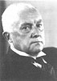
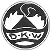
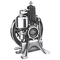
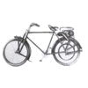
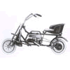
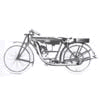
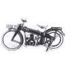

1906 |
Sunt facuti primii pasi. Danezul Jorgen Skafte Rasmussen a cumparat o fosta fabrica de stofa din Zschopau. |
 | |
1907 |
Tanarul inginer danez inregistreaza fabrica de masinarie pe numele “Rasmussen & Ernst” la Primaria Zschopau pe 13 aprilie. La inceput s-au fabricat aparaturi pentru gospodarie si pentru ateliere de mecanica auto. |
||
1912 |
Fabrica isi schimba numele in “Fabrica de Masinarii din Zschopau, J. S. Rasmussen”. |
||
1917 |
Ca orice alta fabrica, si acesta pe timpul Primului Razboi Mondial a fost nevoita sa produca echipament de razboi. Pe langa fabricarea sistemelor de aprindere pentru grenade, s-a mai incercat lansarea pe piata a automobilului pe aburi, ceea ce din pacate a esuat, dar s-a nascut o noua marca, “DKW” (Dampf Kraft Wagen), automobil cu propulsor pe sistem de aburi. |
 | |
1919 |
S-a facut un nou pas in dezvoltarea fabricii, aceea de a fabrica motoare in doi timpi, dar de jucarie. Acestea sunt prezentate pentru prima data la expozitia din Leipzig. |
 | |
1920 |
Se fabrica o bicicleta cu motor de un cal putere, iar DKW devine prescurtarea pentru „Das kleine Wunder”, adica micul miracol. Fabrica isi schimba numele si se va numi Fabrica de Motoare Zschopau, J. S. Rasmussen. |
 | |
1921 |
Modelele Golem si Lomos sunt primele modele de mini-motorete. La inceput nu au reprezentat o mare afacere pentru fabrica. Primele rezultate s-au vazut cand acestea au cucerit locul 2 respectiv 3 la cursa de anduranta de 800 de km intre Berlin si Heidelberg. |
 | |
1922 |
Este anul in care se incepe fabricarea motocicletelor. Prima motocicleta este de 148 cmc, cu motor in doi timpi si 2.5 cai-putere. |
 | |
1923 |
Fabrica se schimba intr-o societate comerciala. Este inceputul Concernului DKW. Se introduc taxele pentru autovehicule. |
||
1924 |
Modelul DKW deschide drumuri si idei noi, sunt fabricate 50 000 de exemplare. Clientii au sansa de a achizitiona un asemenea model prin rate. Distribuitorii sunt familiarizati cu caracteristicile motocicletei. |
 | |
1926 |
Pentru prima oara se introduce in fabricarea motocicletelor banda rulanta. Se fabrica prima motocicleta cu doi cilindrii in doi timpi. Rezultatele pe plan sportiv cresc: primul loc la Campionatul Stradal din Germania, primul loc la Marele Premiu al Germaniei. |
||
1927 |
In concern se naste un departament pentru optimizarea motocicletelor de curse. Rasmussen isi extinde gama de productie pe piata, anume el produce frigidere si agregate pentru masini. |
||
1928 |
Concernul a cumparat toate actiunile fabricii de automobile Audi AG Zwickau. La aceea vreme concernul DKW a fost cel mai mare producator de motociclete, cu 45 000 de motociclete produse anual si 2 357 muncitori. |
||